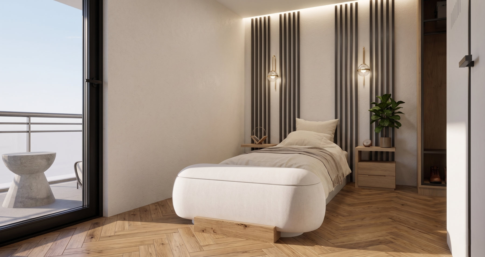
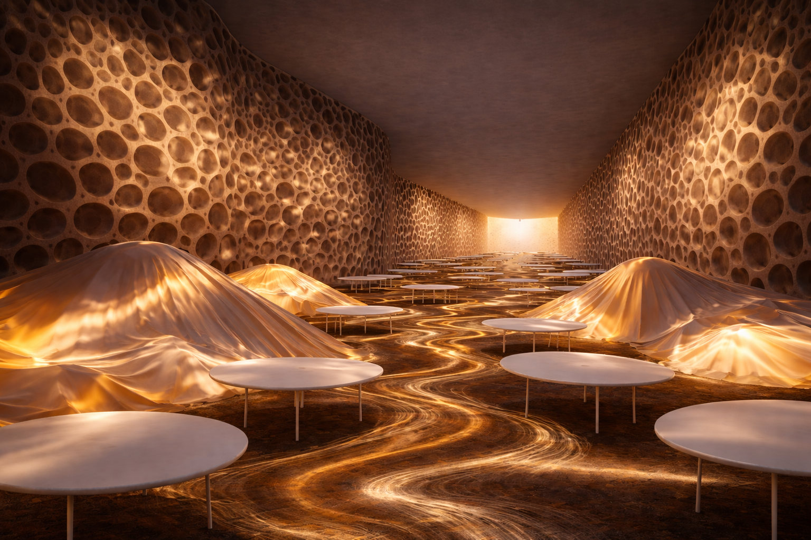
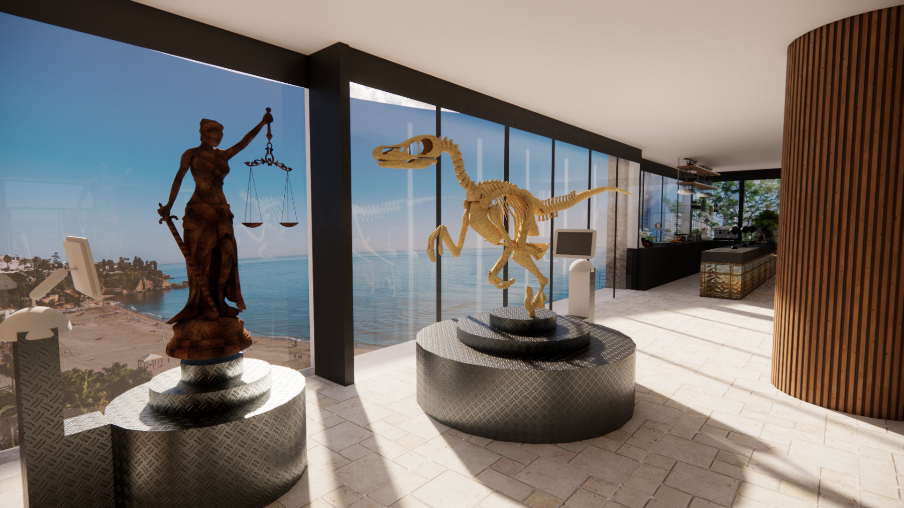
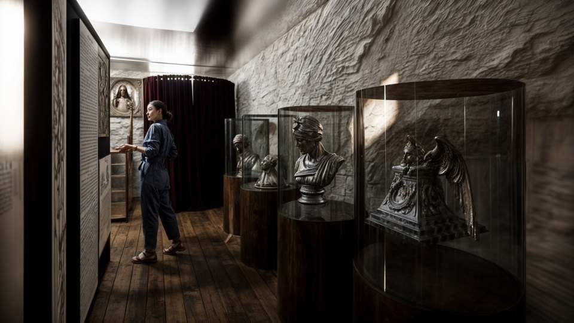
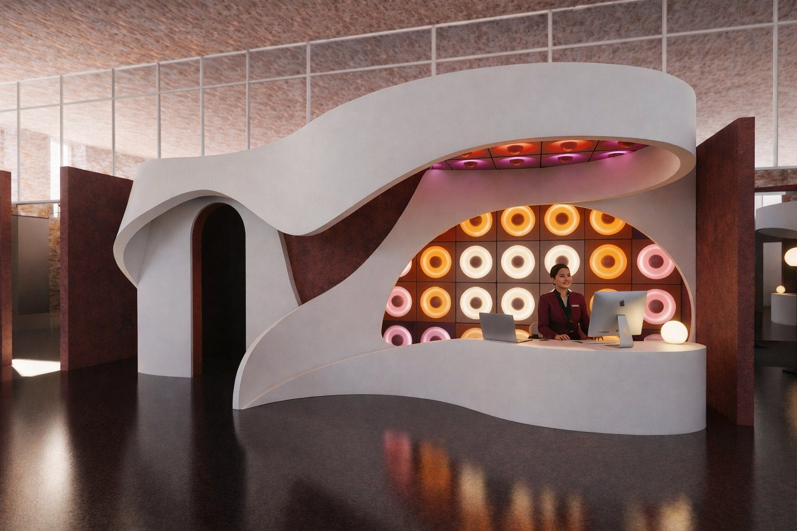
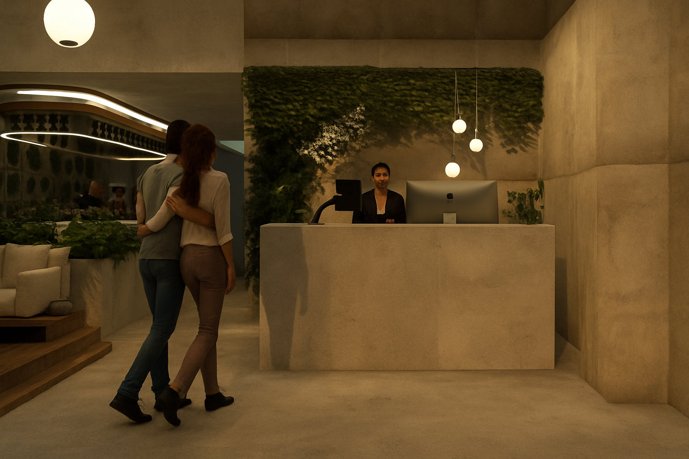
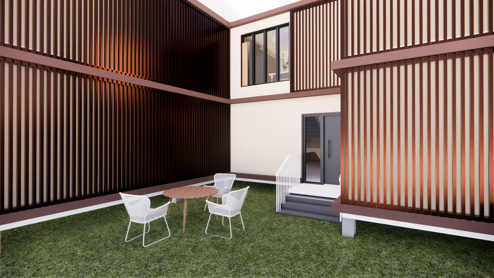
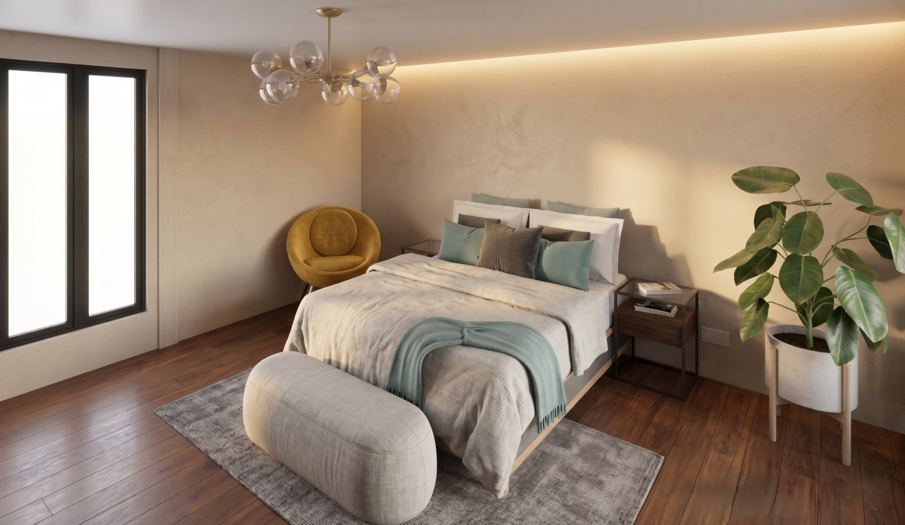
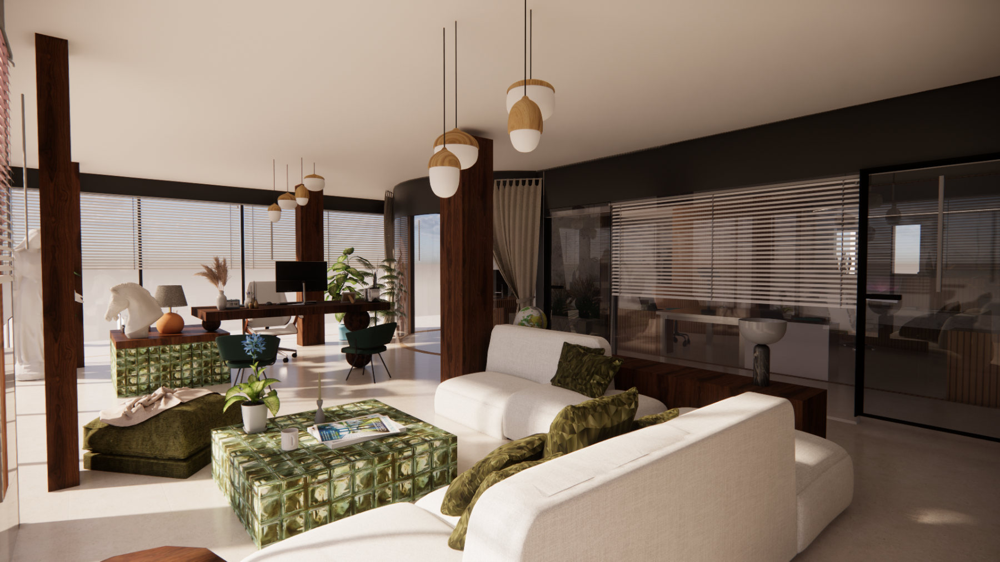
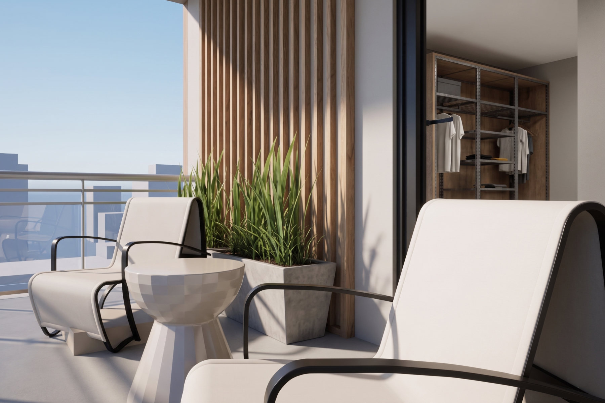

About
Spaces shaped by people.
Ideas grounded in detail.

An interior architect based in Ankara, and a graduate of İstanbul Medipol University’s English-taught Interior Architecture and Environmental Design programme.
My work connects concept development, spatial design, technical drawing and presentation. Through university projects and internships in both an architecture office and on site, I have explored how an idea becomes a workable interior.
- People & purposeAesthetics, function and user needs are considered together from the first design decision.
- Concept to detailA continuous approach, from the initial idea to technical details and the final presentation.
- Learning through makingAttention to materials, construction and collaboration, with an openness to learning at every stage.
- Based in
- Ankara
- Graduated
- 2026
- Languages
- Turkish · English

All projects
-

ARCHÉ Interactive museum · Laboratories · Offices -

BALYAN Building survey and refunctioning -

Beyond the Self Digital museum · Graduation project -

EDENA Hotel · Urban Oasis -
 LOS PLATOS DE FRIDA
Concept restaurant · Mexican cuisine
LOS PLATOS DE FRIDA
Concept restaurant · Mexican cuisine
-

NATURE RETREAT Rehabilitation centre -

NATURE RETREAT Rehabilitation centre · Living unit interior
Experience
From the drawing
to the site.
Two internships in Ankara brought different perspectives to my education: the design decisions made in the office, and their translation into materials and construction on site.
-
July – August 2025 Office internship · 30 working days
Beyza Aksöz İç Mimarlık
ve Tasarım AtölyesiInterior Architecture Intern · Ankara
Contributed to concept development and design decisions, supported technical and detail drawings, and researched materials, furniture and design alternatives for project presentations.
-
July – August 2024 Site internship · 30 working days
Muslu İnşaat
Interior Architecture Intern · Senve Five Project · Ankara
Followed construction progress and site organisation, studied materials and fabrication details, and observed how architectural drawings guide implementation and coordination on site.


Skills & tools
Design thinking.
Technical fluency.
A toolkit for developing a concept, communicating its spatial qualities and working through the details that make it possible.
Technical drawing
Plans, application drawings and construction details, supported by experience in office and site workflows.
AutoCAD · Advanced / Revit · Intermediate3D modelling & visualisation
Spatial modelling and rendered views to develop design ideas and communicate the character of an interior.
SketchUp · Intermediate / V-RayVisual communication
Project presentations and visual studies that bring concept, material and design decisions together.
Adobe Creative Suite · Intermediate / Procreate training certificateProject organisation
Project planning, implementation and budget management, with attention to the relationship between drawings and delivery.
Planning · Implementation · Budget managementCommunication & collaboration
Client relations and communication within project teams, supported by Turkish as a native language and advanced English.
Turkish · Native / English · Advanced
Education & development
A foundation.
An ongoing curiosity.
Academic study, workshops and shared creative work continue to inform my approach to interior architecture.
September 2021 – July 2026 Bachelor’s degree
İstanbul Medipol University
Interior Architecture and Environmental Design
English-taught programme. Project work spanning concept development, design, technical detailing and presentation.
Community
Genç İç Mimarlar Derneği
Active participation in the association’s media team.
Since 2024
TMMOB İçmimarlar Odası
Participation in events and workshops organised by the Chamber of Interior Architects (İÇMO).
Training
Procreate
Training certificate, extending a visual communication toolkit for design work.
Get in touch
Let’s start a conversation.
merhaba@eylulyildiz.archi- Based in
- Eryaman, Ankara, Türkiye
- Languages
- Turkish (native) · English (advanced)
For interior architecture opportunities, project collaborations or a first conversation about a space, you can reach me by email.